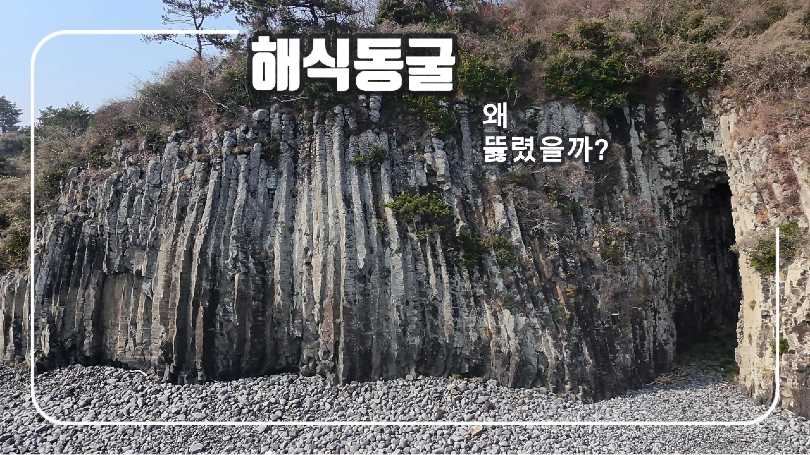
해식동굴
파도 침식으로 형성된 동굴
SkyViewism — 하늘의 시선으로 세상을 다시 바라봅니다
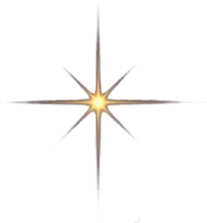

파도 침식으로 형성된 동굴
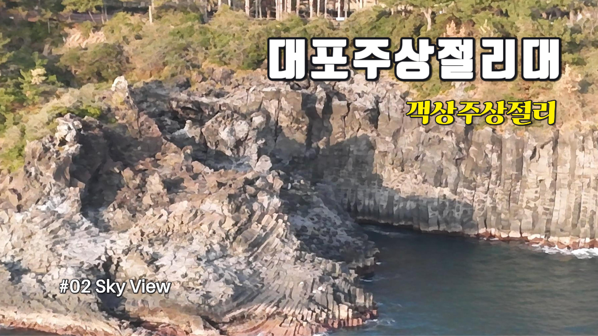
제주 화산 활동의 흔적
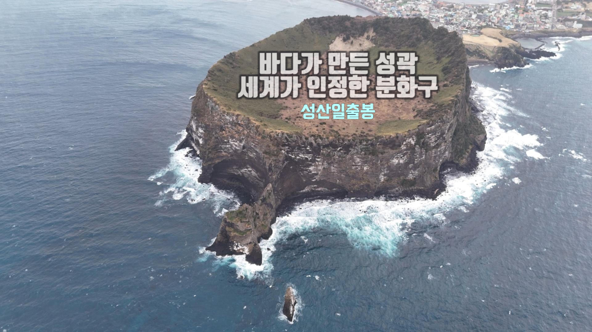
바다 위 응회구 화산체
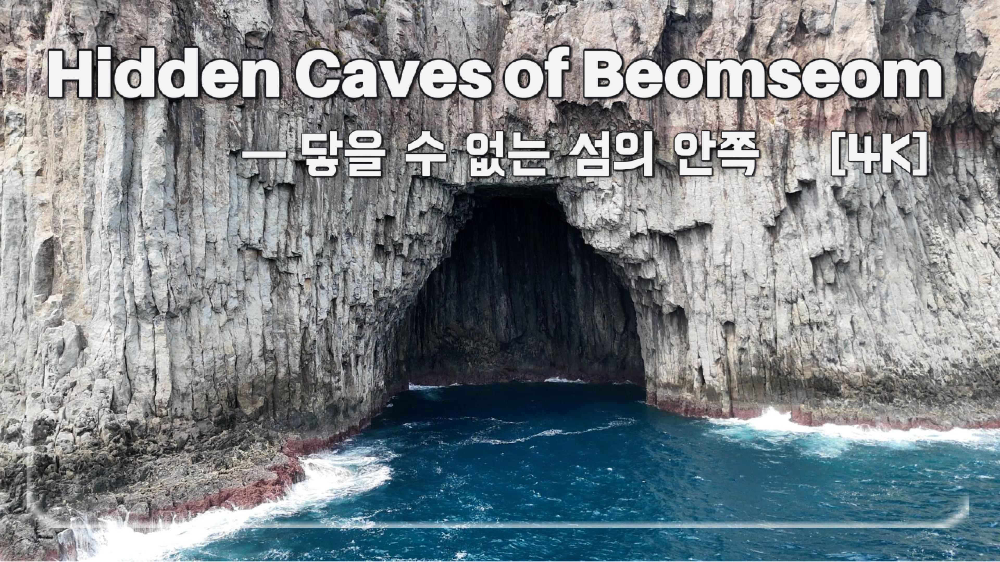
절벽 안쪽의 숨은 공간
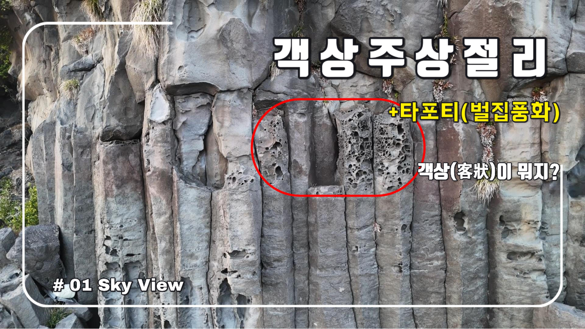
벌집풍화가 만든 암석 구조
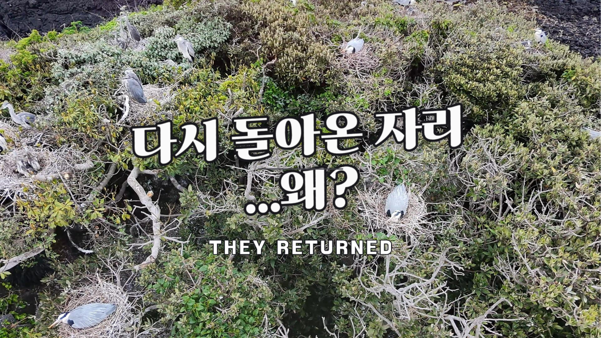
바다 절벽 위를 지키는 새의 시선
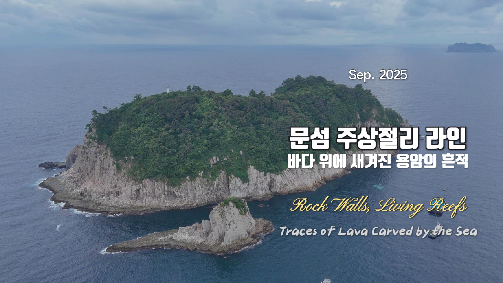
바다 위에 새겨진 용암의 흔적
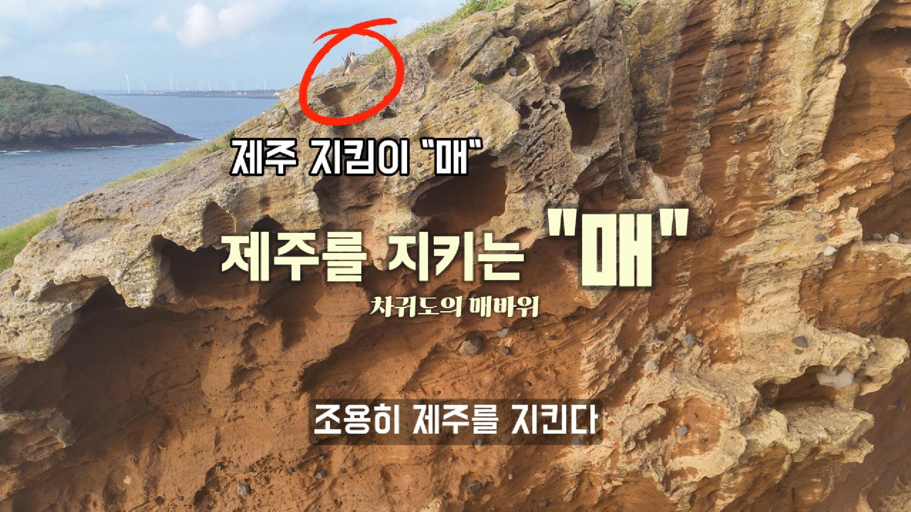
파도와 바람이 만든 해안 구조
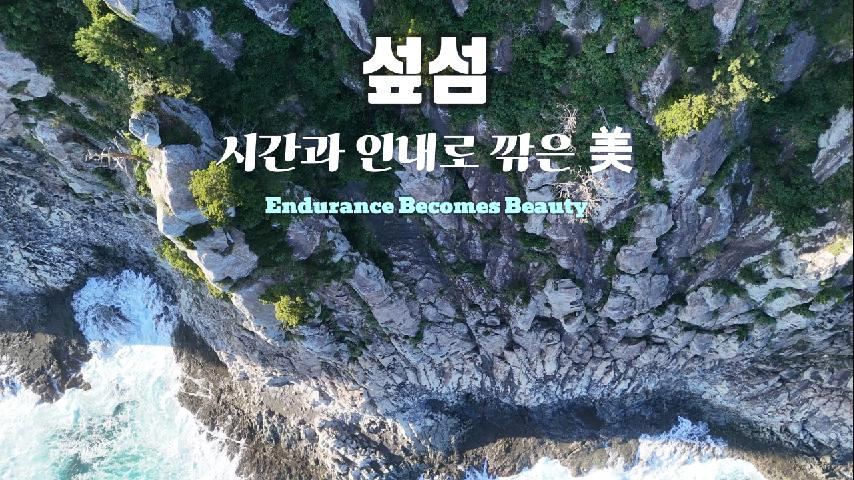
해안 절벽과 숲이 만나는 섬
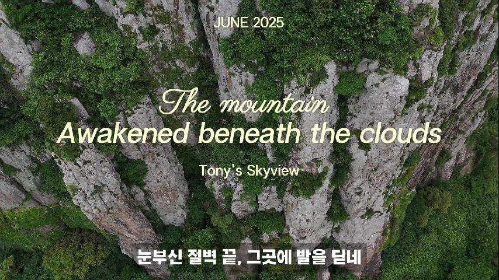
구름 아래 떠 있는 용암의 산